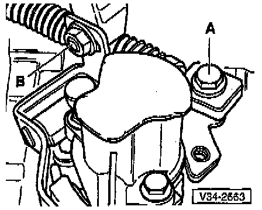
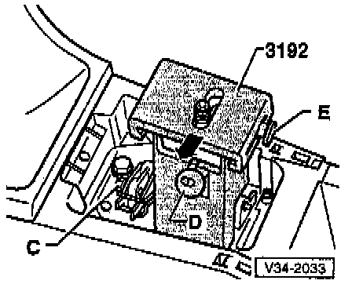
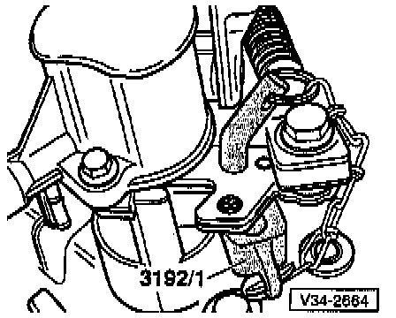

Shift Linkage: Adjustments
ADJUSTMENTRequirements Transmission in Neutral
- Remove shift knob and boot, refer to Shift Lever Boot M/T. Service and Repair
- Remove balance weight, refer to Replacement. Service and Repair

- Loosen bolt -A- and nut -B- until gear selector cables and actuating arm/gate selector cable move freely in elongated holes.

- Loosen bolt -C-.
- Install shift linkage gauge 3192.
- Pivot gauge mounting hook under mounting plate and tighten nut -D-.
- Press shift lever into left-hand detent of slide.
- Press shift lever and slide toward left (direction of -arrow-) to stop and tighten slide with bolt -E-.

- Press shift lever toward right-hand detent (direction of -arrow-).
- Tighten bolt -C-.

- Install wedge and pin.
- Slide wedge between gear selector lever and selector cover plate, making sure there is no play
CAUTION: Installing the wedge must not lift the transmission gearshift lever.
- In this position secure gear selector cable and actuating arm/selector cable, and check position of wedge.
- Remove shift linkage gauge 3192.
- Install shift lever and boot, refer to Shift Lever Boot M/T. Service and Repair
FUNCTIONAL CHECK
Requirements
^ Transmission in Neutral
^ Shift lever in 3rd gear (3GR)/4th gear (4GR) gate
- Depress clutch pedal and start engine.
- Wait approximately 3-6 seconds, to allow transmission input shaft to come to a standstill.
- Select each gear several times, checking all gears.
Pay particular attention to operation of reverse gear pawl.
- Should any gear fail to engage smoothly after being selected repeatedly, the selector shaft play (lift) should be checked as follows:
- Select 1st gear.
- Press shift lever to left, to stop, then release. At same time observe selector shaft on transmission.
Requires help of a second technician.

- When moving the shift lever, the selector shaft must move approx. 1 mm (0.04 inch) in the direction of the -arrow-.
- If not:
- Disengage 1st gear.

- Loosen nut -A- at actuating arm gate selector cable mounting.
- Gate selector cable has some play at mounting due to transfer elements-minimal play at mounting is normal
- Take up gate selector cable play by lightly pressing mounting toward bulkhead -arrow-.
- Tighten nut -A- in this position.
CAUTION:
^ Achieving a correct adjustment of the gear selector mechanism requires the following:
^ Shift linkage and transfer elements operating correctly
^ Rubber bushings (for mounting the selector cables to all operating elements) in good condition (not worn)
^ Selector cables operate smoothly
^ Transmission, clutch and clutch release mechanism in good condition